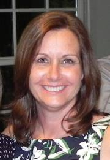

About Me

Christi Savino is a Software Engineer that has worked on fascinating projects for several defense contractors. Her favorite was software test for the F-16 Fighting Falcon which included an opportunity to fly in the fight simulator. Christi has a BS in Computer Science from the University of Central Florida and a Masters degree from Shepherds Theological Seminary. When she has free time she volunteers as a counselor at church and enjoys mentoring younger women.
Christi grew up on a lake in Orlando and loves boating and fishing. She can attest that most lakes in Florida have gators but she still loves swimming and waterskiing when she visits Florida in the summer. Her favorite beach is New Smyrna Beach, the shark capital of the world, on the east coast of Florida where she loves exploring marine ecosystems and has played with manatees.